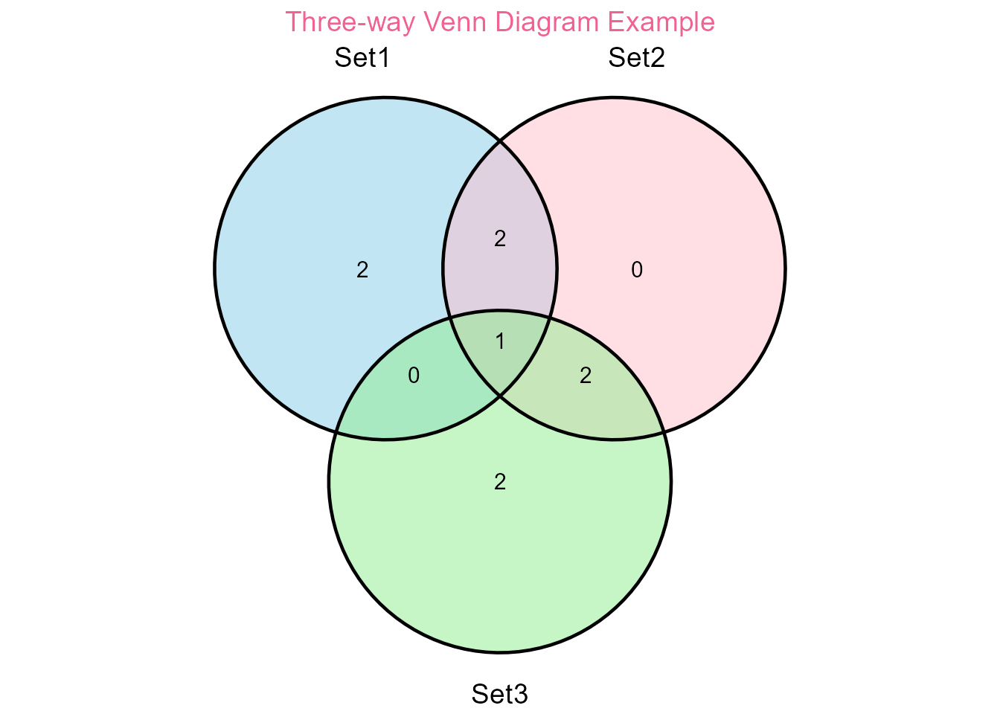
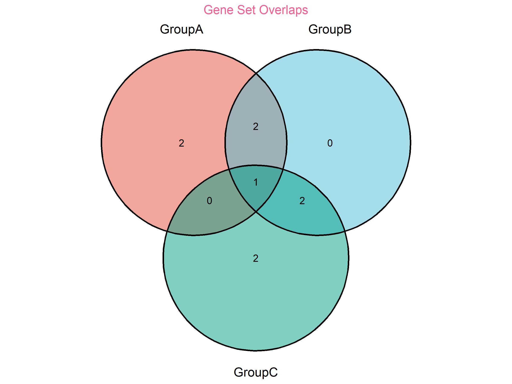
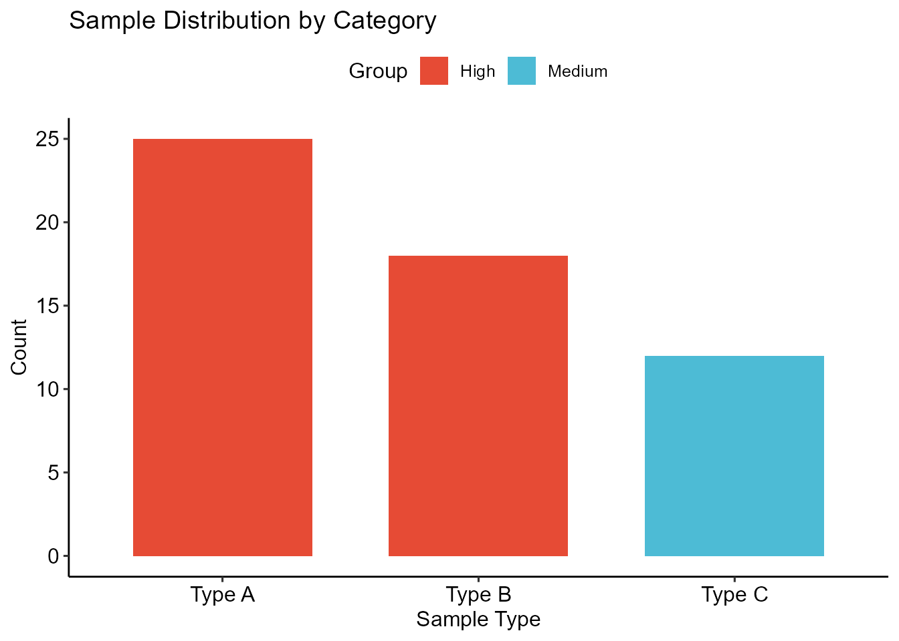

📖 Comprehensive Guide to evanverse
Welcome to the comprehensive guide for evanverse - a feature-rich R utility package providing 55+ functions for data analysis, visualization, and bioinformatics workflows.
🚀 Package Installation and Setup
# Install from CRAN
install.packages("evanverse")
# Or install development version from GitHub
evanverse::inst_pkg("evanbio/evanverse")📦 Package Management
The evanverse package provides robust package management utilities:
# Check if packages are installed
required_packages <- c("dplyr", "ggplot2", "tidyr")
check_pkg(required_packages)
#> # A tibble: 3 × 4
#> package name installed source
#> <chr> <chr> <lgl> <chr>
#> 1 dplyr dplyr TRUE CRAN
#> 2 ggplot2 ggplot2 TRUE CRAN
#> 3 tidyr tidyr TRUE CRAN
# Get package version (skip on CRAN due to network dependency)
if (!identical(Sys.getenv("NOT_CRAN"), "false")) {
try(pkg_version("evanverse"), silent = TRUE)
}
#> package version latest source
#> 1 evanverse 0.3.5 <NA> Not Found🎨 Color Palette System
Available Palettes
# List all available palettes
palettes_info <- list_palettes()
print(palettes_info)
#> name type n_color
#> 6 contrast_duo diverging 2
#> 8 fire_ice_duo diverging 2
#> 11 polar_duo diverging 2
#> 12 sunset_sky diverging 2
#> 10 piyg diverging 3
#> 7 earthy_diverge diverging 5
#> 9 gradient_rd_bu diverging 11
#> 14 earthy_triad qualitative 3
#> 26 primary_triad qualitative 3
#> 31 softtrio qualitative 3
#> 33 vintage_triad qualitative 3
#> 13 balanced_quartet qualitative 4
#> 32 vibrant qualitative 5
#> 34 violin qualitative 5
#> 24 harmonysix qualitative 6
#> 25 pastel_harmony qualitative 6
#> 18 ggsci_jama qualitative 7
#> 23 ggsci_tron_legacy qualitative 7
#> 21 ggsci_nejm qualitative 8
#> 28 rcb_set2 qualitative 8
#> 20 ggsci_lancet qualitative 9
#> 27 rcb_set1 qualitative 9
#> 35 vividset qualitative 9
#> 15 ggsci_cosmic qualitative 10
#> 16 ggsci_flatui qualitative 10
#> 19 ggsci_jco qualitative 10
#> 22 ggsci_npg qualitative 10
#> 17 ggsci_futurama qualitative 12
#> 29 rcb_set3 qualitative 12
#> 30 sc_pbmc qualitative 17
#> 1 blues sequential 3
#> 2 forest_fade sequential 4
#> 4 muted_gradient sequential 4
#> 5 warm_blush sequential 4
#> 3 ggsci_locuszoom sequential 7
#> colors
#> 6 #C64328, #56BBA5
#> 8 #2AA6C6, #C64328
#> 11 #8CB5D2, #E18E8F
#> 12 #57A2FF, #FF8000
#> 10 #E64B35B2, #00A087B2, #3C5488B2
#> 7 #283618, #606C38, #FEFAE0, #DDA15E, #BC6C25
#> 9 #67001f, #b2182b, #d6604d, #f4a582, #fddbc7, #f7f7f7, #d1e5f0, #92c5de, #4393c3, #2166ac, #053061
#> 14 #C64328, #56BBA5, #E3A727
#> 26 #C64328, #2AA6C6, #E3A727
#> 31 #E64B35B2, #00A087B2, #3C5488B2
#> 33 #96A0D9, #D9BDAD, #D9D5A0
#> 13 #5D83B4, #9FD0E8, #CDAE9D, #959683
#> 32 #BF3F9D, #B3BCD7, #6DA6A0, #D98A29, #F2C894
#> 34 #37848C, #F2935C, #F2A88D, #D95555, #A7CAE9
#> 24 #BF3641, #836AA6, #377BA6, #448C42, #D96236, #B79290
#> 25 #B2AA76, #8C91CF, #D7D79C, #DABFAC, #BCEDDB, #C380A0
#> 18 #374E55, #DF8F44, #00A1D5, #B24745, #79AF97, #6A6599, #80796B
#> 23 #FF410D, #6EE2FF, #F7C530, #95CC5E, #D0DFE6, #F79D1E, #748AA6
#> 21 #BC3C29, #0072B5, #E18727, #20854E, #7876B1, #6F99AD, #FFDC91, #EE4C97
#> 28 #66C2A5, #FC8D62, #8DA0CB, #E78AC3, #A6D854, #FFD92F, #E5C494, #B3B3B3
#> 20 #00468B, #ED0000, #42B540, #0099B4, #925E9F, #FDAF91, #AD002A, #ADB6B6, #1B1919
#> 27 #E41A1C, #377EB8, #4DAF4A, #984EA3, #FF7F00, #FFFF33, #A65628, #F781BF, #999999
#> 35 #E64B35, #4DBBD5, #00A087, #3C5488, #F39B7F, #8491B4, #91D1C2, #DC0000, #7E6148
#> 15 #2E2A2B, #CF4E9C, #8C57A2, #358DB9, #82581F, #2F509E, #E5614C, #97A1A7, #3DA873, #DC9445
#> 16 #c0392b, #d35400, #f39c12, #27ae60, #16a085, #2980b9, #8e44ad, #2c3e50, #7f8c8d, #bdc3c7
#> 19 #0073C2, #EFC000, #868686, #CD534C, #7AA6DC, #003C67, #8F7700, #3B3B3B, #A73030, #4A6990
#> 22 #E64B35, #4DBBD5, #00A087, #3C5488, #F39B7F, #8491B4, #91D1C2, #DC0000, #7E6148, #B09C85
#> 17 #FF6F00, #C71000, #008EA0, #8A4198, #5A9599, #FF6348, #84D7E1, #FF95A8, #3D3B25, #ADE2D0, #1A5354, #3F4041
#> 29 #8DD3C7, #FFFFB3, #BEBADA, #FB8072, #80B1D3, #FDB462, #B3DE69, #FCCDE5, #D9D9D9, #BC80BD, #CCEBC5, #FFED6F
#> 30 #a2d2e7, #67a8cd, #ffc17f, #cf9f88, #6fb3a8, #b3e19b, #50aa4b, #ff9d9f, #f36569, #3581b7, #cdb6da, #704ba3, #9a7fbd, #dba9a8, #e40300, #e99b78, #ff8831
#> 1 #deebf7, #9ecae1, #3182bd
#> 2 #B2C9AD, #91AC8F, #66785F, #4B5945
#> 4 #E2E0C8, #A7B49E, #818C78, #5C7285
#> 5 #FFCDB2, #FFB4A2, #E5989B, #B5828C
#> 3 #D43F3A, #EEA236, #5CB85C, #46B8DA, #357EBD, #9632B8, #B8B8B8Using Color Palettes
# Get specific palettes
vivid_colors <- get_palette("vividset", type = "qualitative")
blues_gradient <- get_palette("blues", type = "sequential")
cat("Vivid qualitative palette:\n")
#> Vivid qualitative palette:
print(vivid_colors)
#> [1] "#E64B35" "#4DBBD5" "#00A087" "#3C5488" "#F39B7F" "#8491B4" "#91D1C2"
#> [8] "#DC0000" "#7E6148"
cat("\nBlues sequential palette:\n")
#>
#> Blues sequential palette:
print(blues_gradient)
#> [1] "#deebf7" "#9ecae1" "#3182bd"Creating Custom Palettes
# Create a custom palette (demonstration only - not executed to avoid file creation)
custom_colors <- c("#FF6B6B", "#4ECDC4", "#45B7D1", "#96CEB4")
# Example of how to create a custom palette (using temp directory):
# create_palette(
# name = "custom_demo",
# colors = custom_colors,
# type = "qualitative",
# color_dir = tempdir() # Use temporary directory to avoid cluttering package
# )
# Preview the custom colors
print("Custom palette colors:")
#> [1] "Custom palette colors:"
print(custom_colors)
#> [1] "#FF6B6B" "#4ECDC4" "#45B7D1" "#96CEB4"
cat("This would create a palette named 'custom_demo' with", length(custom_colors), "colors\n")
#> This would create a palette named 'custom_demo' with 4 colors📊 Visualization Functions
Venn Diagrams
# Create sample data for Venn diagram
set1 <- c("A", "B", "C", "D", "E")
set2 <- c("C", "D", "E", "F", "G")
set3 <- c("E", "F", "G", "H", "I")
# Create Venn diagram
venn_plot <- plot_venn(
set1 = set1,
set2 = set2,
set3 = set3,
category.names = c("Set1", "Set2", "Set3"),
title = "Three-way Venn Diagram Example"
)

Venn diagram example
print(venn_plot)

Venn diagram example
Bar Plots
# Sample data
sample_data <- data.frame(
Category = c("Type A", "Type B", "Type C"),
Count = c(25, 18, 12),
Group = c("High", "High", "Medium")
)
# Create bar plot with custom colors
vivid_colors <- get_palette("vividset", type = "qualitative")
bar_plot <- plot_bar(data = sample_data,
x = "Category",
y = "Count",
fill = "Group") +
ggplot2::scale_fill_manual(values = vivid_colors) +
ggplot2::labs(title = "Sample Distribution by Category",
x = "Sample Type",
y = "Count")
print(bar_plot)

Professional bar plot
🧬 Bioinformatics Utilities
Gene ID Conversion
# Convert gene symbols to Ensembl IDs
gene_symbols <- c("TP53", "BRCA1", "EGFR")
ensembl_ids <- convert_gene_id(
ids = gene_symbols,
from = "SYMBOL",
to = "ENSEMBL",
species = "human"
)
print(ensembl_ids)🔄 Data Processing and Void Handling
Working with Void Values
# Create sample vector with void values
messy_vector <- c("A", "", "C", NA, "E")
print("Original vector:")
#> [1] "Original vector:"
print(messy_vector)
#> [1] "A" "" "C" NA "E"
# Check for void values
cat("\nAny void values:", any_void(messy_vector), "\n")
#>
#> Any void values: TRUE
# Replace void values
clean_vector <- replace_void(messy_vector, value = "MISSING")
print("After replacing voids:")
#> [1] "After replacing voids:"
print(clean_vector)
#> [1] "A" "MISSING" "C" "MISSING" "E"Data Transformation
# Convert data frame to grouped list by cylinder count
grouped_data <- df2list(
data = mtcars[1:10, ],
key_col = "cyl",
value_col = "mpg"
)
print("Cars grouped by cylinder, showing MPG values:")
#> [1] "Cars grouped by cylinder, showing MPG values:"
str(grouped_data)
#> List of 3
#> $ 4: num [1:3] 22.8 24.4 22.8
#> $ 6: num [1:5] 21 21 21.4 18.1 19.2
#> $ 8: num [1:2] 18.7 14.3💾 File Operations
Flexible File Reading
# Read various file formats flexibly
data1 <- read_table_flex("data.csv")
data2 <- read_excel_flex("data.xlsx", sheet = 1)
# Get file information
file_info("data.csv")
# Display directory tree
file_tree(".")🛠️ Development Tools
Timing and Execution
# Time execution of code
result <- with_timer(function() {
Sys.sleep(0.01) # Quick simulation
sum(1:1000)
}, name = "Sum calculation")
print(result)
#> function (...)
#> {
#> cli::cli_alert_info("{name} started at {format(Sys.time(), '%Y-%m-%d %H:%M:%S')}")
#> tictoc::tic()
#> result <- fn(...)
#> timing <- tictoc::toc(quiet = TRUE)
#> elapsed <- as.numeric(timing$toc - timing$tic, units = "secs")
#> cli::cli_alert_success("{name} completed in {sprintf('%.3f', elapsed)} seconds")
#> invisible(result)
#> }
#> <bytecode: 0x0000025326bafd20>
#> <environment: 0x0000025326b9ed98>Safe Execution
# Execute code safely
safe_result <- safe_execute({
x <- 1:10
mean(x)
})
print(safe_result)
#> [1] 5.5📈 Summary
The evanverse package provides a comprehensive toolkit for:
- Package Management: Multi-source installation and management
- Data Visualization: Publication-ready plots with sensible defaults
- Color Management: Professional palette system for consistent styling
- File Operations: Robust I/O with enhanced error handling
- Bioinformatics: Specialized tools for genomic data processing
- Data Processing: Advanced transformation and void value handling
- Custom Operators: Expressive syntax extensions for R
- Development Tools: Productivity enhancing utilities
With 55+ functions across 8 major categories, evanverse streamlines your data analysis workflow while maintaining flexibility and reliability.
🔗 Next Steps
- Explore the Color Palettes guide for advanced palette management
- Check out Bioinformatics Workflows for domain-specific applications
- Visit the Function Reference for detailed documentation
For more information, visit the evanverse website or the GitHub repository.